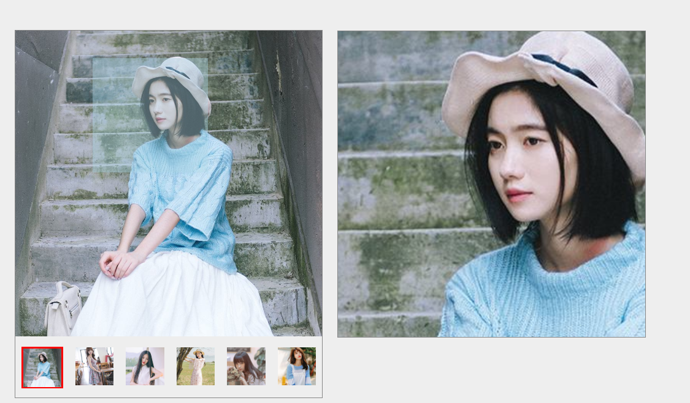

原文出处:本文由博客园博主黑夜丶vn提供。
原文连接:https://www.cnblogs.com/zsp-1064239893/p/11220932.html
原文连接:https://www.cnblogs.com/zsp-1064239893/p/11220932.html
我们平时在电商网站购物时，需要对选取的某一个商品进行详情查看，此时当鼠标在商品图片上某一部分移动查看时旁边就会出现一个该部分图片的放大效果，这样就能够更好的对商品进行分析，下面就使用原生js来实现一下类似放大镜的效果。
思路分析：
1.鼠标切换图片列表时，.pic盒子中的图片相对应切换
2.在.pic中生成一个.zoom的盒子，移动该盒子时类似对.pic盒子中的图片进行剪切
2.1 动态获取.zoom盒子相对.pic盒子的background-positin属性值
2.2 对.zoom盒子的移动范围进行限制（只在.pic盒子中移动）
3.将剪切的图片按比例放大显示到.details的盒子中
注：放大比例 = 左边盒子的大小 / 里面进行剪切的盒子大小，该比例值作为右边盒子显示内容的大小
代码如下：


1 <!DOCTYPE html>
2 <html lang="en">
3 <head>
4 <meta charset="UTF-8">
5 <meta name="viewport" content="width=device-width, initial-scale=1.0">
6 <meta http-equiv="X-UA-Compatible" content="ie=edge">
7 <title>原生js实现图片放大镜</title>
8 <link rel="stylesheet" href="./css/style.css">
9 </head>
10
11 <body>
12
13 <div id="wrap">
14 <div class="pic">
15 <img src="./images/1.jpg" alt="">
16 <div class="zoom"></div>
17 </div>
18 <ul class="list">
19 <li class="current">
20 <img src="./images/1.jpg" alt="">
21 </li>
22 <li>
23 <img src="./images/2.jpg" alt="">
24 </li>
25 <li>
26 <img src="./images/3.jpg" alt="">
27 </li>
28 <li>
29 <img src="./images/4.jpg" alt="">
30 </li>
31 <li>
32 <img src="./images/5.jpg" alt="">
33 </li>
34 <li>
35 <img src="./images/6.jpg" alt="">
36 </li>
37 </ul>
38 <div class="details"></div>
39
40
41 <script src="./js/index.js"></script>
42 </body>
43 </html>@charset "utf-8";
* {
margin: 0;
padding: 0;
}
li{
list-style: none;
}
body {
background-color: #eee;
}
#wrap {
position: relative;
width: 400px;
height: 480px;
margin: 50px auto;
border: 1px solid #888;
}
#wrap .pic img {
width: 400px;
height: 400px;
}
#wrap .pic .zoom {
position: absolute;
top: 0;
left: 0;
width: 150px;
height: 150px;
background-color: lightblue;
opacity: .4;
cursor: move;
}
#wrap .list {
display: flex;
margin-top: 10px;
justify-content: space-around;
}
#wrap .list li{
cursor: pointer;
}
#wrap .list .current{
border: 2px solid red;
}
#wrap .list img {
width: 50px;
height: 50px;
vertical-align: bottom; /* 解决图片底部留白，改变对齐方式，默认基线对齐 */
}
#wrap .details {
position: absolute;
/* display: none; */
top: 0;
left: 400px;
width: 400px;
height: 400px;
margin-left: 20px;
border: 1px solid #888;
background-image: url('/images/1.jpg');
background-size: 266%;
} 1 var list = document.querySelector(' .list '),
2 img = document.querySelector(' .pic img '),
3 li_list = list.querySelectorAll(' li '),
4 pic = document.querySelector(' #wrap .pic '),
5 zoom = document.querySelector(' .zoom '),
6 details = document.querySelector(' .details ')
7
8 list.addEventListener('click', function (e) {
9 e = e || window.event
10 // console.log(e.target)
11 if (e.target.tagName == 'IMG') {
12 img.src = e.target.src;
13 details.style.backgroundImage = 'url(' + e.target.src + ')';
14 // console.log(e.target.parentNode)
15 li_list.forEach(function (item) {
16 console.log(item)
17 item.className = ''; // 每次遍历六个li元素并清除类名
18 })
19 e.target.parentNode.className = 'current'; // 通过e.target找到其父元素并添加上类名
20 // console.log(li_list)
21 }
22 }, false)
23
24 pic.addEventListener('mousemove', function (e) {
25 e = e || window.event
26 var x = e.clientX,
27 y = e.clientY;
28 cx = pic.getBoundingClientRect().left; // getBoundingClientRect()获取某个元素相对于视窗的位置集合
29 cy = pic.getBoundingClientRect().top;
30 tx = x - cx - 75;
31 ty = y - cy - 75
32 // console.log(e)
33 // console.log(x,y)
34 // console.log(cx,cy)
35
36 // 对.zoom盒子移动范围进行限制
37 if(tx < 0){
38 tx = 0;
39 }
40 if(tx > 250){
41 tx = 250
42 }
43 if(ty < 0){
44 ty = 0;
45 }
46 if(ty > 250){
47 ty = 250
48 }
49
50 details.style.backgroundPosition = (tx / 250 * 100 + '%') + (ty / 250 * 100 + '%')
51
52 zoom.style.left = tx + 'px'
53 zoom.style.top = ty + 'px';
54 })
最终效果：

总结：
整体先实现静态效果，然后根据需求进行一步步逻辑代码的编写，从而实现整个效果